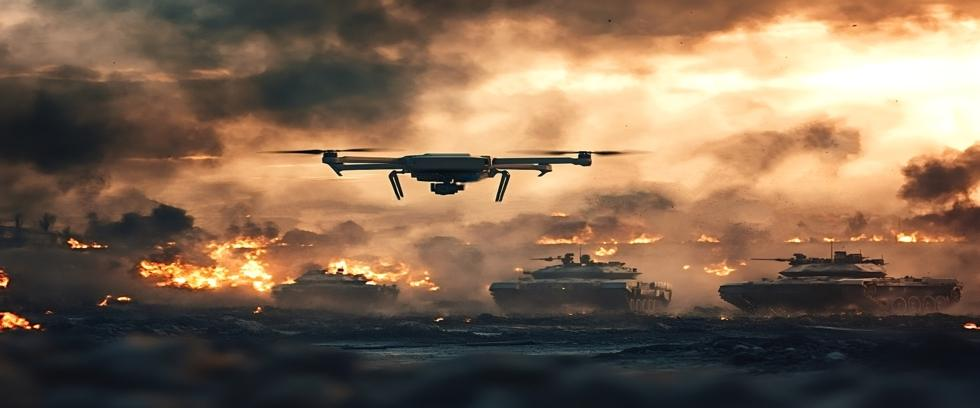

Artificial intelligence (AI) is rapidly reshaping many aspects of modern life, from transportation and medicine to finance and national security. Among the most alarming implications of AI is its growing ability to influence nuclear warfare. While AI promises better threat detection and faster decision-making, it also introduces new uncertainties and ethical questions that have yet to be resolved.
Understanding the evolving relationship between AI and nuclear weapons is essential when the stakes involve nothing less than the survival of civilization itself.
AI's Influence on Nuclear Threats
In a military context, AI typically refers to software that can rapidly analyze large volumes of information, recognize patterns, and make recommendations or decisions without direct human intervention. Within the nuclear sphere, AI is being explored in several critical areas:
- Early warning systems: AI is increasingly used to analyze data from satellites, radars, and sensors to detect potential attacks faster than traditional methods can.
- Command and control systems: Some militaries are experimenting with AI-driven support tools that help leaders interpret threats and initiate responses under extreme time pressure.
- Autonomous weapons systems: Although not in direct control of nuclear forces yet, the rise of automated defense systems raises questions about whether AI could eventually be entrusted with—or gain control over—nuclear delivery mechanisms.
- Cybersecurity defense: Protecting nuclear arsenals from cyberattacks increasingly relies on AI to detect intrusions and anomalies faster than human operators can.
In theory, AI could reduce human error and enhance deterrence. But in practice, it may introduce unpredictable factors that make nuclear confrontations more likely rather than less.
Advantages AI Could Offer
Proponents of integrating AI into nuclear operations argue that better technology could help stabilize deterrence in several ways.
First, AI can process information far faster than human analysts can. In situations where minutes count, such as detecting an incoming missile attack, AI could help military and political leaders make informed decisions more rapidly.
Second, AI could improve threat detection by distinguishing between real attacks and false alarms. Some nuclear close calls in the past have stemmed from errors or misinterpretations by human operators. AI, properly trained, might recognize patterns and anomalies that humans could miss.
Third, AI could bolster defenses against cyberattacks that target nuclear command-and-control systems. By automatically identifying attempted breaches, AI-driven cybersecurity measures could help prevent critical systems from being hacked.
In these ways, AI could theoretically reduce the likelihood of accidental or unauthorized nuclear use.
The Dangers of AI in Nuclear Decision-Making
Despite potential benefits, many experts warn that integrating AI into nuclear operations could increase, not decrease, the chances of catastrophe.
One major risk is automation bias, where human operators defer to AI judgments even when they are flawed. If AI misinterprets incoming data as a real attack, and operators trust the system more than their own judgment, a false alarm could escalate into a nuclear response.
Another risk is accidental escalation. AI systems may act faster than humans can intervene. In a crisis, AI-driven defense systems could misinterpret an adversary's actions, escalating a conflict before leaders have time to assess the situation correctly.
Furthermore, AI systems are not immune to cyber vulnerabilities. A hacked AI system controlling early warning systems or communications networks could inject false data or disable critical functions at a key moment.
Finally, there are profound ethical concerns about delegating decisions of life and death to mathematical algorithms. Even if humans technically remain “in the loop," the sheer speed and complexity of AI systems may create pressures that make effective human oversight impossible during a fast-moving crisis.
The Absence of Rules and Agreements
Currently, there are no international agreements regulating the use of AI in nuclear weapons systems. Existing treaties such as the Treaty on the Non-Proliferation of Nuclear Weapons, New START, or the Comprehensive Nuclear-Test-Ban Treaty were crafted long before AI was a consideration.
A few nations have expressed general concerns about the militarization of AI. Organizations such as the United Nations have also held preliminary discussions on the dangers of developing autonomous weapons outside human oversight. But binding regulations specific to AI and nuclear weapons have not been agreed upon.
Meanwhile, arms races involving AI are already underway. The United States, Russia, and China are investing heavily in military AI research and development. But without some transparency about AI’s level of integration, mistrust grows and risks of miscalculations increase.
Past experience with nuclear weapons reveals that technological breakthroughs alone cannot guarantee safety. Without careful diplomacy, robust verification measures, and shared understandings, existential risks inevitably grow. Similar efforts must be focused on AI’s role in nuclear weapons systems, lest humanity find itself the victim of its own technology.
Why This Conversation Matters
The integration of AI into nuclear warfare is not an abstract scenario involving a distant future—it’s happening now. As early-warning systems, nuclear command structures, and autonomous defense measures become increasingly more automated, the risk of unintended consequences expands.
At the Our Planet Project Foundation, we are committed to raising awareness about these issues, knowing that the consequences of ignorance could be absolute. We believe that understanding AI’s role in nuclear warfare is essential to ensuring that technological progress does not outpace our ability to control it.